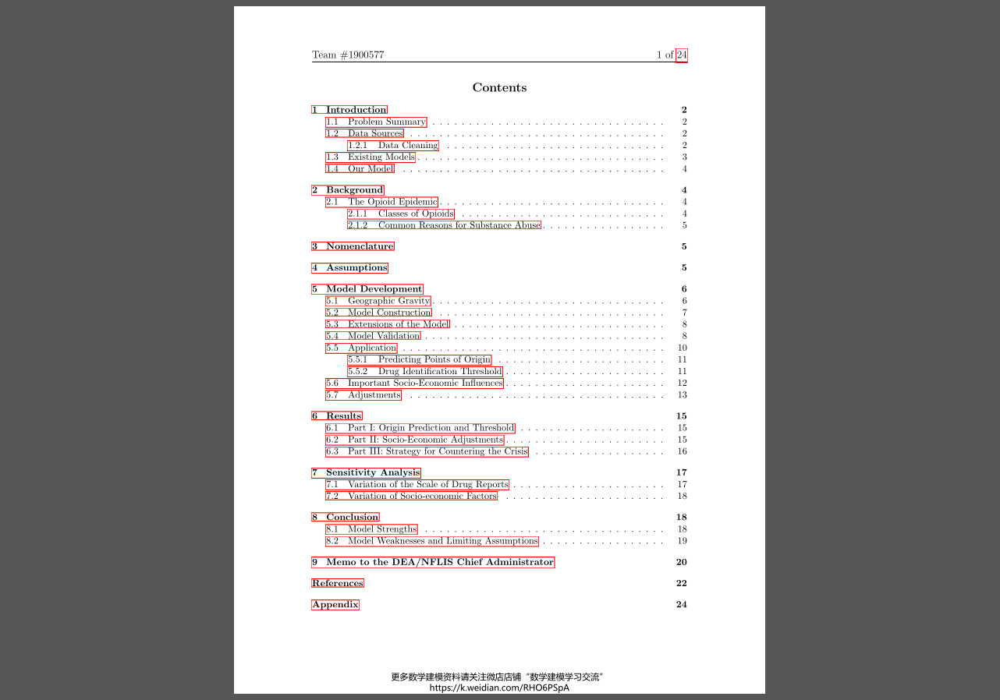
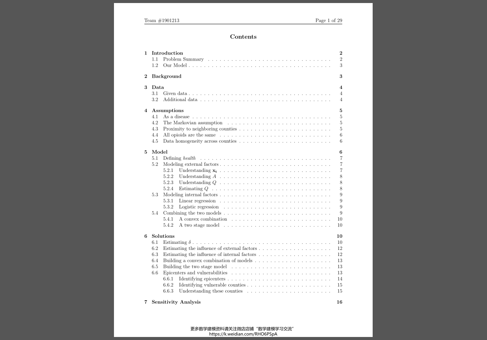
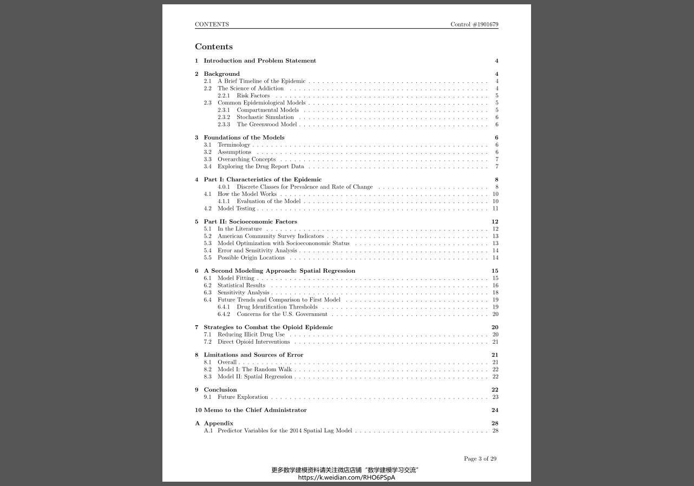
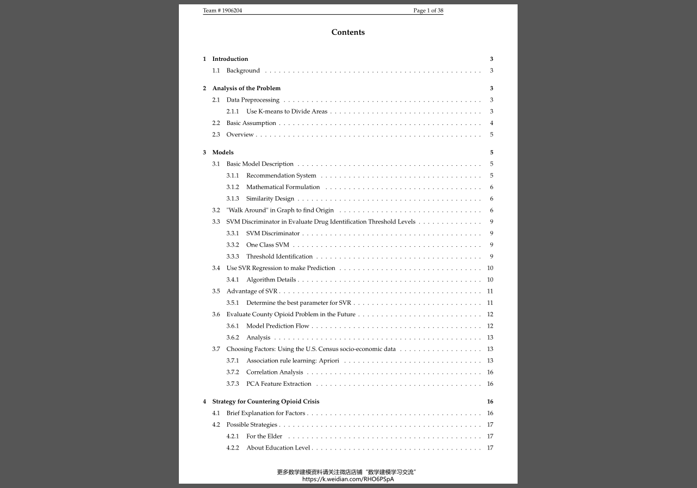
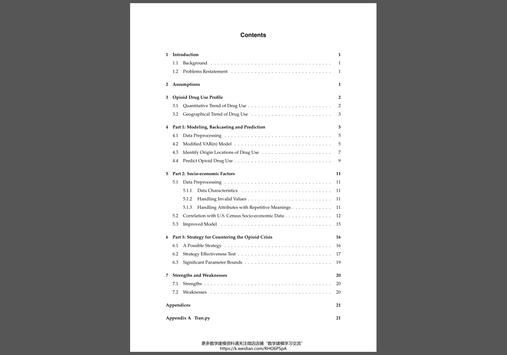
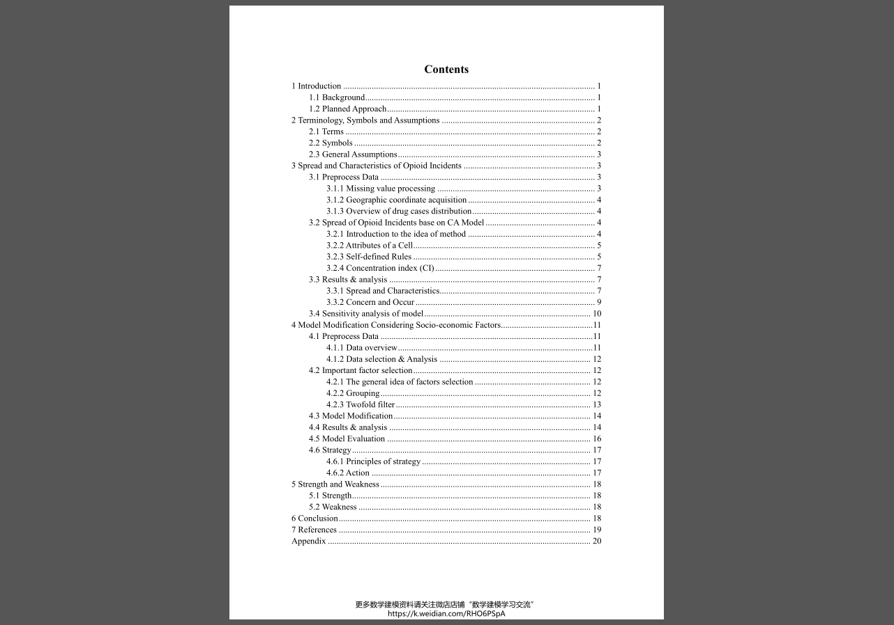

2019C题论文研读
题目描述
第一部分：利用NFLIS提供的数据，建立一个数学模型，描述所报告的合成阿片类药物和海洛因事件(病例)随时间在五个州及其县之间的传播情况和特点。使用你的模型，确定在这五个州中的每一个州可能开始使用特定阿片类药物的任何可能的地点。
如果你的团队确定的模式和特征继续存在，美国政府是否应该有什么具体的担忧？在什么药物识别阈值水平会发生这些情况？您的模型预测它们将在未来何时何地发生？
第二部分：利用提供的美国人口普查社会经济数据，解决以下问题：
有许多相互矛盾的假设被提出，以解释阿片类药物的使用如何达到目前的水平，谁在使用/滥用阿片类药物，是什么导致了阿片类药物的使用和成瘾的增长，以及为什么尽管阿片类药物的使用存在已知的危险，但阿片类药物的使用仍然存在。使用情况或使用趋势是否与提供的任何美国人口普查社会经济数据有某种关联？如果是，请修改第1部分中的模型，以包含此数据集中的任何重要因素。
第三部分，结合你的第一部分和第二部分的结果，找出一种可能的应对阿片类药物危机的策略。使用您的模型来测试此策略的有效性；确定成功(或失败)所依赖的任何重要参数范围。
除了您的主报告之外，还应向首席管理员(DEA/NFLIS数据库)提供1-2页的备忘录，总结您在此建模工作中确定的任何重要见解或结果。
论文总结
论文一1900577
The Gravity of the Opioid Crisis
由于阿片类药物在全国范围内的极端滥用，美国正处于一场全国性的危机之中。与以往任何时候相比，所有年龄段和人口统计数据的用户都变得上瘾了。为了探索这场毒品流行的未来影响，我们对药物滥用的传播进行了建模和表征。
我们使用NFLIS 2010-2017年的毒品报告数据对肯塔基州、俄亥俄州、宾夕法尼亚州、弗吉尼亚州和西弗吉尼亚州的县内和县之间的毒品使用传播进行多变量分析。我们基于三个主要因素来开发毒品传播模型：
- 吸毒影响
- 当前药物报告的发展趋势
- 相关的社会经济因素
我们通过对现有的县级药品报告数据进行时间上的二次加权线性回归来识别当前药品报告的趋势。为了刻画一个县的毒品使用影响的性质，我们将一个县的毒品影响因素定义为单位面积的毒品报告密度。我们找出特定阿片类药物的来源，并根据影响因素确定药物识别阈值。从2018年到2025年，有6个县超过了我们为模拟确定的门槛，表明疫情正在加剧。
利用地理引力原理，我们建立了对其他县的影响与距离之间的反相关关系，作为其存在趋势的加权因素。我们验证我们的模型比前一年的数据更能预测下一年的药物报告。
然后，我们发现随着时间的推移，毒品报告与美国人口普查社会经济因素之间存在关联。利用相关性最高的社会经济数据，我们计算了基于时间的药品报告的多元线性回归。这个调整后的模型显示，与基线相比，我们的预测数据相对于实际数据的残差减少了12.2%。
我们使用美国其他地区的战略来改善对吸毒者的容留。利用药物教育和康复中心等因素，我们估计总体药物消费将会减少。

论文二1901213
Take Me Home: Preventing Journeys Down the Opioid Addiction Road
近年来，过量服药一直是美国意外死亡的主要原因，处方阿片类药物和海洛因是这一类别中最严重的违法者之一。虽然许多人需要阿片类药物来控制他们的慢性和严重的疼痛，但这些治疗的一个常见后果是滥用、成瘾和升级为更糟糕的物质。有各种各样的战略来打击毒品的传播，如教育、康复和执法。然而，考虑到阿片类药物在美国社会中的新的无处不在，有必要采取更有针对性的策略。
我们已经开发了一种模型，可以有力而准确地预测阿片类药物在俄亥俄州、宾夕法尼亚州、弗吉尼亚州、西弗吉尼亚州和肯塔基州内部和之间的传播。为此，我们：
- 通过将阿片成瘾视为一种在邻国之间确定性传播的疾病，并假设它的传播可以用马尔科夫方式建模，从而可视化了2010年至2016年期间阿片类药物在该地区的移动和传播。这将使我们能够找到一个过渡矩阵，告诉我们每个县对彼此的影响。我们还将县与县之间的距离纳入了这个矩阵。
- 接下来，我们对整个数据集的社会经济因素的影响进行了建模，并将这些变化与该县阿片类药物使用随时间增长或减少的情况相关联。然后，我们以两种方式组合模型-以线性和并行方式。我们用这个来估计毒品问题发源地的震中。
- 最后，我们进行了多次模拟，并预测了毒品问题在未来很长一段时间内的情况，以便从不同的角度制定一些应对流行病的策略，从对阿片类药物传播影响最大的变量中进行选择。
我们的模型将非法阿片类药物的使用视为一种疾病，当某个地区有更多的人使用阿片类药物时，这种疾病就会传播得更频繁。这使得我们可以设计它，以便将来可以推广到更大的区域。通过可视化这种传播，我们能够见证预测的阿片类药物使用在主要道路上传播的距离比简单的邻接预测的要长。以这种方式连接的县既包括震中，也包括易受影响的县。
为了评估我们的外部模型，我们给它提供了来自所有县的前两年的毒品报告数据，然后允许它传播到2016年。我们的预测在人均10-5份毒品报告的数量级上有误差。在评估我们的内部模型时，我们意识到虽然社会经济因素高度相关，但它们不能准确预测阿片类药物滥用。
在此之后，我们对模型中的各种初始条件进行了修正，如社会经济因素和震中的影响。通过这样做，我们能够找到有效和具有高度针对性的战略，这些战略将大大减少和扭转阿片类药物在所提供区域的流行情况。

论文三1901679
在研究了提供给我们团队的描述2010年至2016年(含2010年至2016年)药物使用和社会经济因素的数据后，我们根据阿片类物质的合成和可获得性将69种阿片类物质分为四类药物。绘制每类药物随时间的使用率图显示，温和止痛药和天然生物碱的使用量随着时间的推移保持相对稳定，半合成药物的使用量略有下降，芬太尼和海洛因等合成药物的使用量大幅增加。这些发现与疾控中心的报告一致。我们也选择了149个社会经济变量中的54个，基于它们的方差、通货膨胀因子得分(一种常用的多重共线性度量)以及它们基于公共卫生文献的相关性。为了对阿片类药物危机在肯塔基州、俄亥俄州、宾夕法尼亚州、西弗吉尼亚州和弗吉尼亚州的传播进行建模，我们采取了双管齐下的方法，开发了两种完全不同的模型，然后在最后对它们进行了比较。
我们的第一个模型基于流行病学中常用的建模方法：SIR/SIS模型和随机模拟。我们从头开始设计了一个算法，它模拟了六个离散类别之间的随机行走，每一个类别都代表了阿片类药物危机的不同阶段，使用阿片类药物滥用流行率和变化率的阈值。我们根据现实的期望对某些类之间的转换进行不同的惩罚。模型的参数和系数的优化是由我们也从头开始设计的误差函数指导的，并受到全局空间自相关统计量Moran‘s I的启发。通过误差计算和可视化映射对我们的模型进行测试表明，经过数百次试验，我们的模型具有很高的精度。然而，这个模型没有提供太多关于社会经济因素对阿片类药物滥用比率的影响的洞察力，因为纳入社会经济因素并没有显著改变模型的结果。
我们的第二个模型弥补了社会经济因素分析中的这一不足。通过对我们最终收集的社会经济预测因素(包括总吸毒率)运行一组空间回归模型，我们探索了分别使用空间滞后、空间误差和空间杜宾模型，将阿片类药物危机的空间模式表征为溢出效应的结果，作为空间相关风险因素的结果，以及作为两者的组合。虽然所有的模型都证实了显著的空间信号，但空间杜宾模型总是表现得最好。我们还计算了每个预测变量对阿片类药物滥用比率的直接、间接和总影响。显然，所有模型中最重要的变量是每个县的总吸毒率。平均结果(在所有七年中)是，在其他条件不变的情况下，总非法药物使用率单位增加将使阿片类药物滥用比率增加52%。考虑到美国疾病控制与预防中心(CDC)的一项统计数据，2014年，61%的药物过量死亡涉及某种类型的阿片类药物，这是相当现实的。相比之下，普通的线性回归报告说，总吸毒率每增加一个单位，阿片类药物滥用率只增加37%。统计方法如Akaike信息准则和似然比检验验证了我们空间模型的优越性。
为了预测阿片类药物流行在这五个州中每一个州的可能起源位置，我们对2000-2010年的随机游走模型进行了蒙特卡洛模拟。我们绘制了这些县的地图，并结合我们的其他发现讨论了它们的安排。随机游走发现，阿片类药物危机很可能始于肯塔基州的蒙哥马利，这与我们的研究一致，即阿片类药物滥用在农村社区比城市社区更普遍[10]。
为了预测2017-2020年阿片类药物危机的蔓延，我们使用了随机游走和空间回归模型。这两款车型相互之间的偏差令人惊讶地微乎其微，特别是在2019年和2020年。随机游走预测，在未来7年内，超过非法阿片类药物使用阈值的县的数量将自然下降，这也与阿片类药物流行遵循流行病学中看到的溢出效应的观点一致。
由于假设SES指标将线性变化，第二个模型的误差将在大约4-5年后显著增加。另一方面，随机游走在想要聚集在一起和随机分配班级之间存在一种健康的紧张关系。在最初的日期附近，它聚集得更多，但随机性开始相当快地复合。因此，随机游走的误差最低，接近4-7年。这意味着预测近期的最佳策略是空间回归和4-7年范围内的随机游走。预测任何超出这一点的事情都会有很大的误差。之后，我们向政府提出了减少普通药物使用将有助于减少非法阿片类药物使用的建议。

论文四1906204
Analysis of the opioid crisis and strategies
美国正在经历一场史无前例的阿片类药物危机。阿片类药物在各种治疗中已被广泛用作药物。快节奏的生活和激烈的社会竞争给人们带来了很大的压力。患有精神或身体疾病的人可能会接受许多药物的治疗，他们很可能会对这些药物上瘾，特别是对阿片类药物。因此，近年来越来越多的毒品鉴定案件被确认。
本模型的目的是根据所提供的数据，找出已报告的合成阿片类药物和海洛因事件的传播情况和特点，并对现状做出可能的解释，对未来的病例分布做出预测。具体地说，我们的模型的灵感来自于\“推荐系统\”。我们模型的第一步与“推荐系统”的目的相似，即寻找不同区域和药物之间的相似性和相关性。直接处理数据是粗略和不准确的，而不考虑这个复杂问题背后的大量因素。为了找出地理位置、婚姻状况、文化程度、年龄分布等因素对阿片类药物危机的影响，一种合适的方法是首先根据社会结构找到相似的区域，然后比较它们之间的毒品传播和阿片类药物识别案例分布的关系，然后将模型扩展到不同的目的，如追踪毒品来源，预测毒品传播。
对于第一部分，我们构造了一个基于相似度的加权有向图(如上所述)，并使用\“四处走动\”策略来模拟毒品扩散过程，以追踪毒品的起始源。在相似性的基础上，利用支持向量机回归拟合数据随时间的分布，预测未来两年合成阿片类药物鉴定和海洛因病例分布情况。然后，我们使用支持向量机判别器来预测一个县是否会有阿片类药物危机的风险。一个处于阿片类药物危机中的县将面临药物滥用的持续增加。
对于第二部分，我们首先通过Kmeans算法对所有数据进行二值化，然后使用关联规则学习算法来寻找导致阿片类药物和药物成瘾的因素。然后引入时间因素，通过相关分析方法进一步简化因素，找出滥用阿片类药物的人群，经过这些步骤，我们就可以找出所有的主要因素。但是，由于这些因素较多，我们还需要使用PCA算法来减少输出因素，使预测模型更加简单，我们的模型发现，人口分布的差异对阿片类药物的滥用有很大的影响。
对于第三部分，我们从第二部分提取了三个主要特征，将数据重新整合并调用到前面的模型中，使我们的模型进行了多维回归。我们针对不同的群体设计了一些策略，并用我们的模型验证了策略的有效性。我们的模型发现，应特别关注无丈夫的女性户主和65岁及以上的户主，提高整体文化水平也可以降低阿片成瘾率。

论文五1909434
在本文中，我们的目标是探索和解释来自五个州的药物数据，通过数学模型进行预测并推荐可能的策略。
首先，根据不同阿片类药物的特点，将已报道的阿片类药物分为三类：海洛因、芬太尼及其衍生物和其他药物。我们使用数据可视化来描述药物使用概况，包括阿片类药物使用的数量和地理趋势，通过这些数据我们可以做出一些有用的推断，以帮助建模和深入分析所提供数据的内在规律。
下一步，我们构建了一个修正的向量自回归(VAR)模型，从时间序列的角度描述阿片类药物使用变化的过程。我们应用我们的模型来追溯过去几年可能的阿片类药物使用情况，然后确定特定阿片类药物使用的可能原产地，发现芬太尼可能是从俄亥俄州和宾夕法尼亚州开始的。然后我们预测未来阿片类药物的使用。结果显示，5个州的海洛因使用程度都将快速下降，2019年海洛因举报总数将不到10000个，俄亥俄州将只有一个县超过我们设定的鉴定门槛。芬太尼及其衍生物的滥用在2018年将进一步严重，特别是在宾夕法尼亚州和俄亥俄州。更重要的是，芬太尼滥用的情况越来越严重。2018年芬太尼及其衍生品报告总数将超过66000份，2019年将达到110000份。在五个州的大多数县，芬太尼及其衍生物的使用已经超过了合理的识别门槛。至于其他阿片类药物，使用密度在缓慢增加，但这些药物的滥用程度不会在短时间内上升到严重水平。
经过适当、精确的数据预处理，运用决策树和相关系数分析阿片类药物使用与社会经济数据的相关性。我们列出了与阿片类药物使用具有线性相关的顶级属性类别，包括教育程度、婚姻状况等。我们还列出了与阿片类药物使用具有非线性相关的顶级属性类别，包括生育力、退伍军人状况等。我们还确定了阿片类药物使用与社会经济属性的细分或细分类别的相关性。我们应用决策树对模型进行了修正，可以略微修正第一个模型给出的预测。
提出了加强禁毒、国道巡警加强道路运输管控、校园宣传吸毒教育、慎用成瘾性药物处方等对策，并提出了相应的对策和措施，并提出了相应的对策和措施，如加强禁毒工作、加强公路巡警管理、加大校园宣传教育力度、加大对成瘾性药物的处方力度等。我们分别从整体和局部两个角度对我们的策略进行了测试，发现一些行动对于减少阿片类药物的使用是有效的，而且通常多个行动联合起来更有效。最后对模型的参数进行了详细的分析。

论文六1922154
The Current Status, Future and Strategy of Opioid
美国正在经历阿片类药物滥用危机，这对美国的发展前景构成极大威胁。基于元胞自动机的思想，我们不仅描述了俄亥俄州、肯塔基州、西弗吉尼亚州、弗吉尼亚州和宾夕法尼亚州报道的合成阿片类药物和海洛因案例的传播和特征，而且还制定了一种可能的应对阿片类药物危机的策略。
我们将一个县及其周围最近的k个县定义为“环境”。基于KNN的思想，我们确定与该县“环境”最相似的m个“环境”，然后利用元胞自动机以m个“环境”的增长率来预测明年该县的病例数量。同时，参照HHI指数，定义了阿片类事件集中指数(CI)来表征病例聚集程度。最后，我们得到了合成阿片类药物和海洛因事件在五个州的分布情况。病例仍集中在交通枢纽，并有蔓延趋势。海洛因扩散到肯塔基州的西南部，以列克星敦为中心，并有蔓延到宾夕法尼亚州和弗吉尼亚州的趋势。基于历史数据和预测，我们确定了每个州的药物识别阈值水平。2026年，俄亥俄州将达到12万的门槛，政府很难控制阿片类药物的使用数量和传播速度。
为了确定某些社会经济因素是否对阿片类药物的使用趋势有显著影响，我们选择2010-2016年所有州病例的前25%和后25%的数据进行方差分析，如果数据通过方差同质性检验。对未通过方差同质性检验的数据进行相关分析，以确定社会经济因素与阿片类药物使用趋势之间的相关性。重要因素的最终选择是婚姻状况、教育程度、血统和在家里说的语言。将上述选择的重要因素加入到“环境”相似性考虑中，我们得到了一个考虑社会经济因素的修正模型。
在以上分析的基础上，我们制定了应对阿片类药物危机的策略，该策略包含两个方面的行动。第一个是给予夫妇税收和抵押贷款利率的折扣，以鼓励人们在法定年龄结婚。另一种是开设一家低成本的英语培训机构，以提高非英语母语人士的英语水平。

结论
以上论文用到的算法和模型基本都是很经典的，比如元胞自动机、决策树、SIR/SIS、马尔科夫过程、支持向量机等，效果很好，也做了丰富的灵敏度分析，都有很高的鲁棒性。
同时，部分论文也有各自创新的立意，比如把县与县之间的影响跟地心引力比拟；利用推荐系统的原理做属性相关性分析；将阿片类药物的滥用视为一种疾病，使用疾病传播学解决问题……但我认为它们能获O奖并非是因为做出了新意。换位思考一下，工作人员是需要一个经典的模型，但经过多种验证，鲁棒性很好；还是需要一个创新的模型，但是结果匆匆忙忙，经不起验证，甚至是编的呢。所以实效性比创新性更重要，人生也是这样，做不了天马行空的天才，有着非凡的创造力，那就当一个踏踏实实的普通人，锻炼务实求真的执行力吧。
在我看来，写论文用到的模型就像生活中的智慧和道理，人人都熟悉，但是优秀的论文可以把这些知识讲透，让读者明白这是经得起实践验证的真理，在限定的条件下使用就能得到较好的结果。而我们能做的就是，将这些道理学透，用透。